Использование WIST для отбора и получения данных дистанционного зондирования
Описание системы WIST, предназначенной для отбора и получения ДДЗ из архивов NASA
Оглавление
WIST - Warehouse Inventory Search Tool (https://wist.echo.nasa.gov/) представляет собой единый интерфейс, предназначенный для поиска и заказа данных дистанционного зондирования, хранящихся в различных архивах NASA. Данная система является преемником EDG и продолжает развиваться, постепенно наращивая свои функциональные возможности. Текущая версия системы - 10.12.2.
Web-страницы WIST организованы таким образом, чтобы пользователю было удобно осуществлять навигацию внутри системы. Однако, не рекомендуется использовать кнопки «Вперед» и «Назад» браузера, для этих целей лучше воспользоваться предоставляемыми системой кнопками и ссылками.
Сверху каждой страницы WIST расположена навигационная панель (Рис. 1), содержащая список основных функций, предоставляемых системой. Также навигационная панель показывает в верхнем правом углу текущий режим входа — гостевой или в качестве зарегистрированного пользователя (в этом случае отображается имя вашей учетной записи).
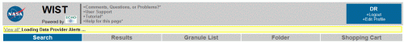
Рис. 1 - Навигационная панель WIST
По умолчанию в WIST используется гостевой режим входа. На главной странице присутствует форма, где можно выбрать — создать новый аккаунт, либо зайти под уже имеющимся (Рис. 2).
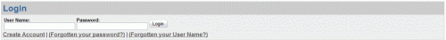
Рис. 2 - Форма ввода логина и пароля
Большинство данных WIST доступно как гостям, так и зарегистрированным пользователям, но при этом существует и ограниченный набор данных (например ASTER GDEM), для поиска и заказа которых необходима регистрация в системе. Гостям выделяется временная сессия, которая удаляется по прошествии нескольких часов неактивности пользователя в системе. Для того, чтобы иметь возможность сохранять запросы или результаты поиска между сессиями, необходимо зарегистрироваться в системе. Регистрация довольно проста и не вызывает никаких затруднений.
После входа в систему (не важно, зашли ли вы под гостем или воспользовались своей учетной записью) вы попадаете на страницу Primary Data Search на которой задаются критерии отбора нужных данных. Данная страница разделена на 4 части:
1) Выбор ключевых слов (Обязательно);
2) Выбор географической области (Опционально);
3) Выбор временного диапазона (Опционально);
4) Выбор дополнительных параметров поиска (Опционально).
3.1 Выбор ключевых слов
Существует несколько способов задать ключевые слова:
1) Выбрать переключатель By Discipline, затем указать класс данных (в данном случае Land>ASTER), далее в открывшемся списке выбрать необходимые наборы данных (в нашем случае это ASTER Global Digital Elevation Model V001). Это наиболее распространенный способ.
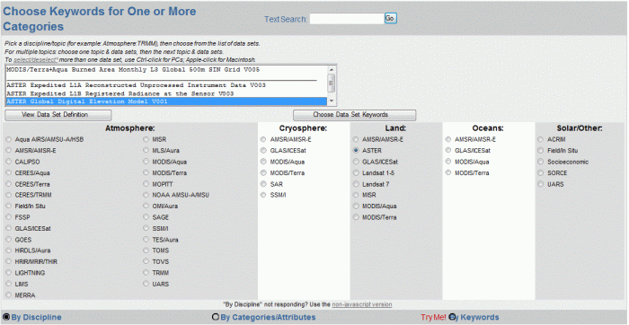
Рис. 3 - Выбор ключевых слов через указание класса данных
2) С помощью текстового поля Text Search.
3) C помощью переключателя By Categories/Attributes.
3.2 Выбор географической области
WIST позволяет выбрать географическую область несколькими способами, среди которых можно выделить два наиболее часто используемых. Orthographic – очень удобный способ для выбора участков небольших размеров и Global Search, позволяющий получать информацию по всему земному шару.
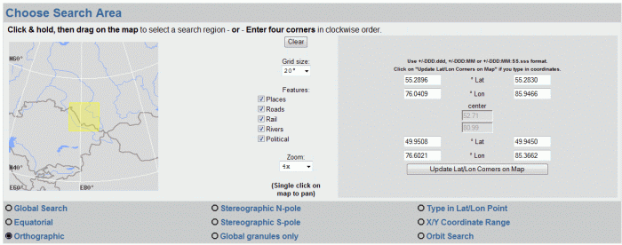
Рис. 4 - Выбор географической области
3.3 Выбор временного диапазона
Выбор временного диапазона позволяет уточнить вышеописанные критерии поиска. Временной интервал можно определить несколькими способами — как стандартным, задав начало и конец диапазона в формате YYYY-MM-DD и HH:MM:SS, так и в формате номер дня. Существует и еще один полезный способ определения временного диапазона, позволяющий выбрать данные только за определенные дни в году (Рис. 5). Такая ситуация может возникнуть в случае если, например,необходимо отобрать данные за несколько лет причем только за определенный сезон.
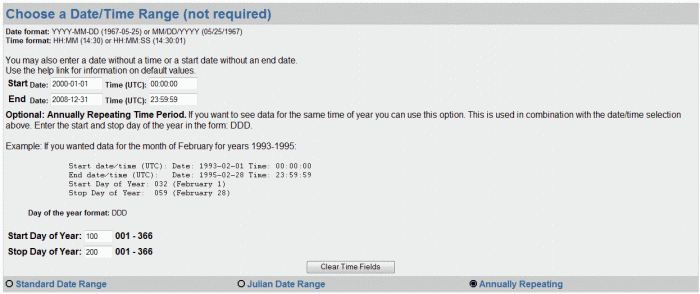
Рис. 5 - Выбор временного диапазона
3.4 Выбор дополнительных параметров поиска
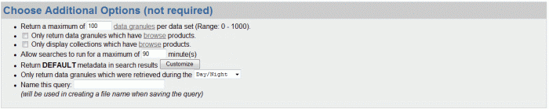
Рис. 6 - Дополнительные параметры поиска
В области выбора дополнительных параметров поиска можно указать максимальное количество запрашиваемых гранул (единиц хранения данных), задать ограничение на время поиска и пр. (Рис. 6). Все заданные параметры поиска можно сохранить в специальный файл, который потом можно использовать повторно. Быстро создать специальный файл со всеми настройками поиска прямо в Arcview GIS можно с помощью расширения для Arcview GIS.
Чтобы сохранить файла запроса или открыть уже существующий,необходимо воспользоваться панелью, представленной на рисунке 7.
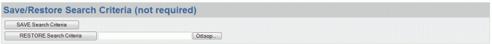
Рис. 7 - Панель сохранения и выбора файла запроса
Чтобы приступить непосредственно к поиску, нажимаем большую кнопку Start Search.
После окончания поиска данных отобразится результирующая таблица (Рис. 8).
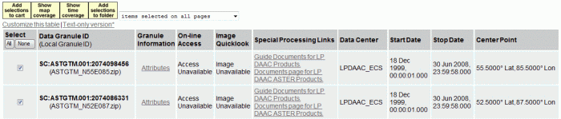
Рис. 8 - Таблица результатов поиска
Выбрав в поле Select интересующие данные, можно просмотреть какой временной отрезок (Show time coverage) или пространственный фрагмент (Show map coverage) они покрывают (Рис. 9, 10).
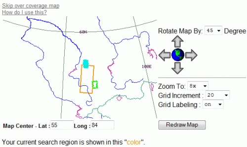
Рис. 9 - Пространственное покрытие выбранных данных
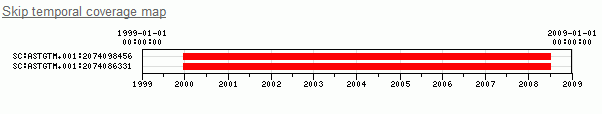
Рис. 10 - Временное покрытие выбранных данных
После того, как необходимые данные отмечены, жмем кнопку Add selections to cart (Рис. 11) и переходим к заказу данных.
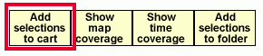
Рис. 11 - Кнопка перехода к заказу
После того, как была нажата кнопка Add selection to cart, появляется таблица в которой представлен список заказываемых данных. Возле каждого набора данных в первом столбце таблицы присутствует ссылка Choose Options, зайдя по которой можно настроить способ доставки соответствующего набора данных. Кроме того, можно настроить единый для всех наборов данных способ доставки. Рассмотрим как это сделать. Нажимаем на любую из ссылок Choose Options (Рис. 12).
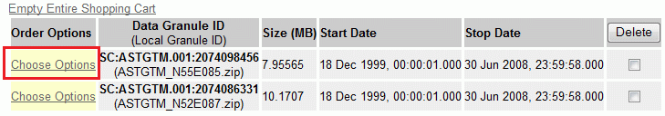
Рис. 12 - Список заказываемых данных
Чтобы применить единый способ доставки ко всем наборам данных, выберите сочетание переключателей как указано на рисунке 13.
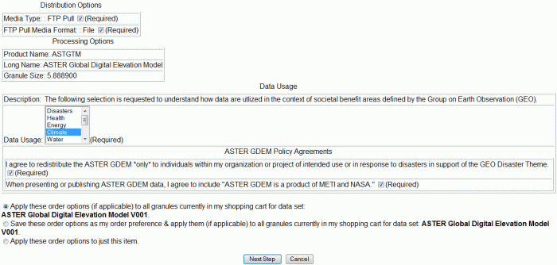
Рис. 13 - Настройка способа доставки данных
Далее нажимаем кнопку Next step, расположенную внизу страницы. Мы снова попадаем на стартовую страницу заказа данных, только теперь на ней появилась кнопка Go to Step 2: Order Form (Рис. 14). Нажимаем её.
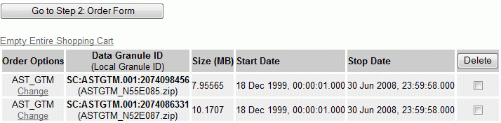
Рис. 14 - Кнопка перехода к следующему этапу заказа
Затем заполняем необходимые поля соответствующими данными, указываем действующий e-mail и ищем кнопку Submit Order Now! Нажимаем её, ждём некоторое время и получаем сообщение формата Your order has been submitted, and a copy of the summary has been emailed to the account ******@gmail.com. Через некоторое время (может варьироваться от нескольких минут до нескольких дней) на почту придёт ссылка на заказанные вами данные.
P.S. В данной статье показаны основные моменты поиска и заказа данных через WIST. Автор не ставил перед собой задачу создать полное описание функциональных возможностей этой системы и потому многие из них не вошли в рамки данной статьи.
Ссылки по теме
Дата создания: 07.07.2009
Автор(ы): Денис Рыков